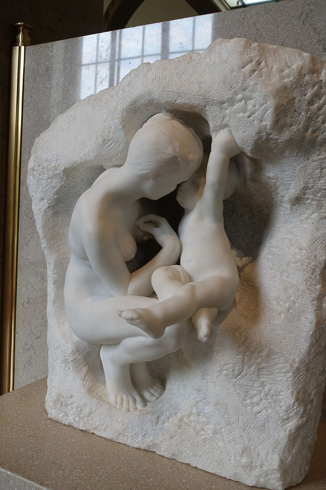

<head>
<meta charset="UTF-8" />
<meta name="keywords" content="drawing, painting" />
<meta name="description" content="drawings by Sunjy" />
<title>Sunjy</title>
<link rel="shortcut icon" type="image/x-icon" href="../../mImages/mCommon/favicon.ico" media="screen" />
<link rel="stylesheet" type="text/css" href="../../mCsses/mCommon/mCssA.css" />
<link rel="stylesheet" type="text/css" href="../../mCsses/mCommon/mCssB.css" />
<link rel="stylesheet" type="text/css" href="../../mCsses/mCommon/mCssC.css" />
<link rel="stylesheet" type="text/css" href="../../mCsses/mCommon/mCssD.css" />
<link rel="stylesheet" type="text/css" href="../../mCsses/mContent/mCssA.css" />
<link rel="stylesheet" type="text/css" href="../../mCsses/mContent/mCssB.css" />
<link rel="stylesheet" type="text/css" href="../../mCsses/mContent/mCssC.css" />
<link rel="stylesheet" type="text/css" href="../../mCsses/mContent/mCssD.css" />
</head>
<script type="text/javascript" src="../../mScripts/mContent/mContentAA.js" /></script>
<script type="text/javascript" src="../../mScripts/mContent/mContentAB.js" /></script>
<script type="text/javascript" src="../../mScripts/mContent/mContentAC.js" /></script>
<script type="text/javascript" src="../../mScripts/mContent/mContentAD.js" /></script>
<script type="text/javascript"></script> 
<script type="text/javascript">
document.write('<div class="mImgAbsolute"></div>');
/*
document.write('<p class="mFontSizeBColor" />From a white paper...</p>');
document.write('<table class="center"><tr><td>');
document.write('');
document.write('</td></tr></table>');
*/
</script>


<script type="text/javascript">
document.write('<p class="mFontSizeBColor" />Young Mother in the Grotto </p>');
document.write('<p class="mFontSizeSColor" />Auguste Rodin modeled young “Mother in the Grotto” in 1885, and the plaster sculpture was exhibited under the title “Woman and Love.” Several versions in bronze and marble were made during Rodin’s lifetime.<br><br>The woman and child theme was evident in Rodin’s early body of work during the mid-1880s.<br><br>This sculpture represents maternal love in a mythological theme; the baby and the young woman were both sentimental and spiritual.<br><br>In the later periods of his career, the subject of maternal love is much less prevalent in Rodin’s work as compared to the theme of love between man and woman.<br><br>Young Mother in the Grotto by Rodin<br><br>The woman, crouching in a grotto and shielding her child from the elements, embodies maternal love and protection.<br><br>The contrasting textures of the smooth figures against the rough grotto walls highlight the way that human forms can magically emerge from the stone.<br><br>This effect was achieved by the sculpturing process, as Rodin learned from studying Michelangelo’s work.<br><br>Like many of Rodin’s other works, the “Young Mother in a Grotto” is related to a mother and child pair found on the left panel of the “Gates of Hell.”<br></p>');
document.write('<table class="center" /><tr><td>');
document.write('<br>The woman and child theme was evident in Rodin’s early body of work during the mid-1880s.<br><br>This sculpture represents maternal love in a mythological theme; the baby and the young woman were both sentimental and spiritual.<br><br>In the later periods of his career, the subject of maternal love is much less prevalent in Rodin’s work as compared to the theme of love between man and woman.<br><br>Young Mother in the Grotto by Rodin<br><br>The woman, crouching in a grotto and shielding her child from the elements, embodies maternal love and protection.<br><br>The contrasting textures of the smooth figures against the rough grotto walls highlight the way that human forms can magically emerge from the stone.<br><br>This effect was achieved by the sculpturing process, as Rodin learned from studying Michelangelo’s work.<br><br>Like many of Rodin’s other works, the “Young Mother in a Grotto” is related to a mother and child pair found on the left panel of the “Gates of Hell.”<br>" />');
document.write('</td></tr></table>');
</script>


